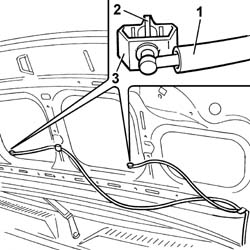
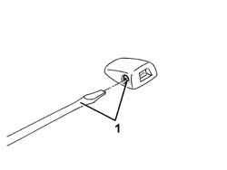

5050B10 FRONT WINDSCREEN WASHER JETS - R+R CLEAN AND/OR POSITION
- Path
- Procedures > 50 AUXILIARY UNITS > 5050 SCREEN WASHERS AND HEADLAMP WASH/WIPE > 5050B WINDSCREEN WASH/WIPE > 5050B10 FRONT WINDSCREEN WASHER JETS - R+R CLEAN AND/OR POSITION
- Kind
- repair procedure (removal / refitting; the operation number is the code)
- Applies to
- all engines; all production periods
- Interactive page
- https://sloeber94.github.io/elrnDB-fDct/en/#/244001317
Applies to: all engines; all production periods
 Removing
Removing
 Refitting
Refitting- Open the bonnet.
- Remove the bonnet lining releasing the fixing buttons using the special tool.
 | Description | Code | Function |
|---|---|---|---|
. | Knife | 1.878.077.000 | Removing press-fittings |
- Position a suitable container for collecting the screen washer fluid.
1. Disconnect the screen washer fluid supply pipe from the jet.
2. Press the retaining tabs.
3. Remove the jet.

Applies to: all engines; all production periods
Refitting
Removing- Clean the front windscreen washer jets and check that they are not damaged.
- Fasten the jets to the bonnet.
1. Adjust the direction of the front windscreen washer jets using a screwdriver on the adjustment screw.

Applies to: all engines; all production periods
- Connect the screen washer fluid supply pipes to the jets.
- Secure the sound insulation to the bonnet using the special press fit buttons.
- Close the bonnet.